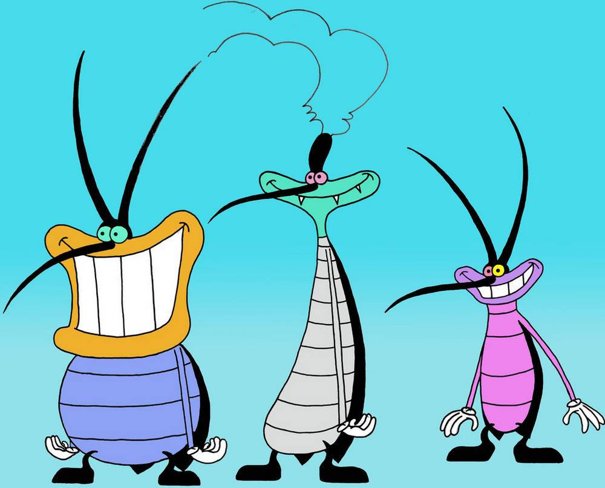
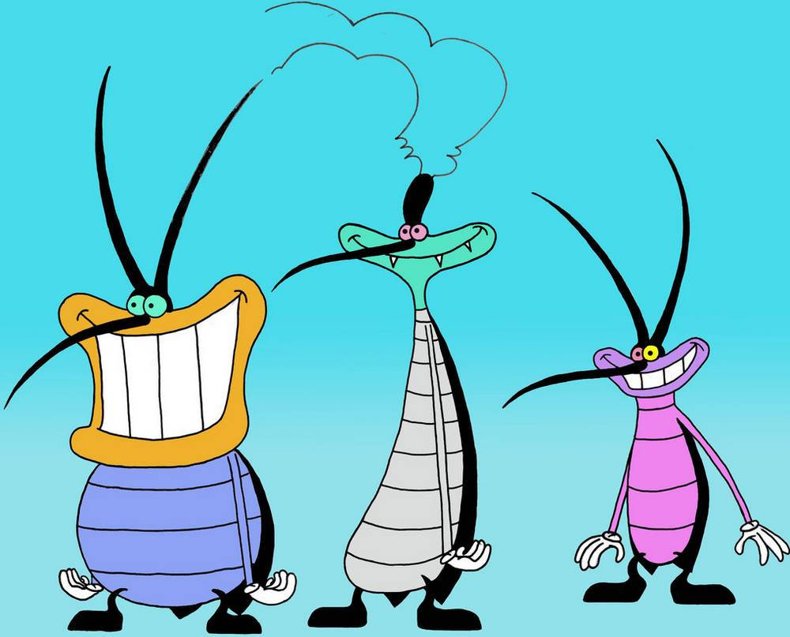
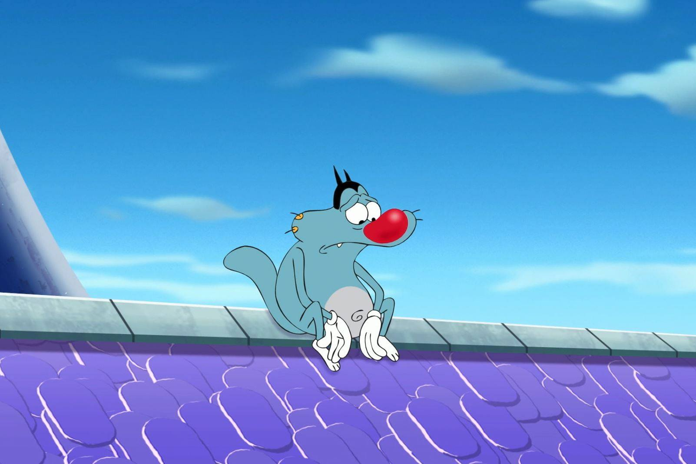
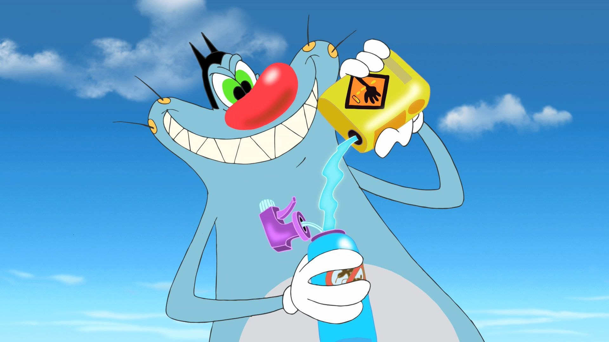
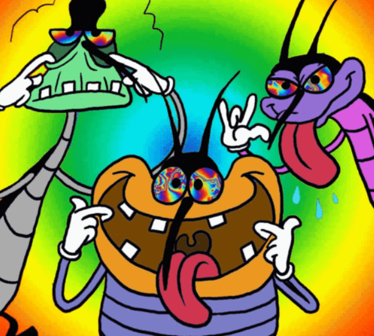
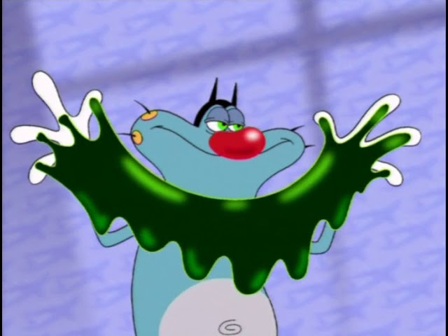
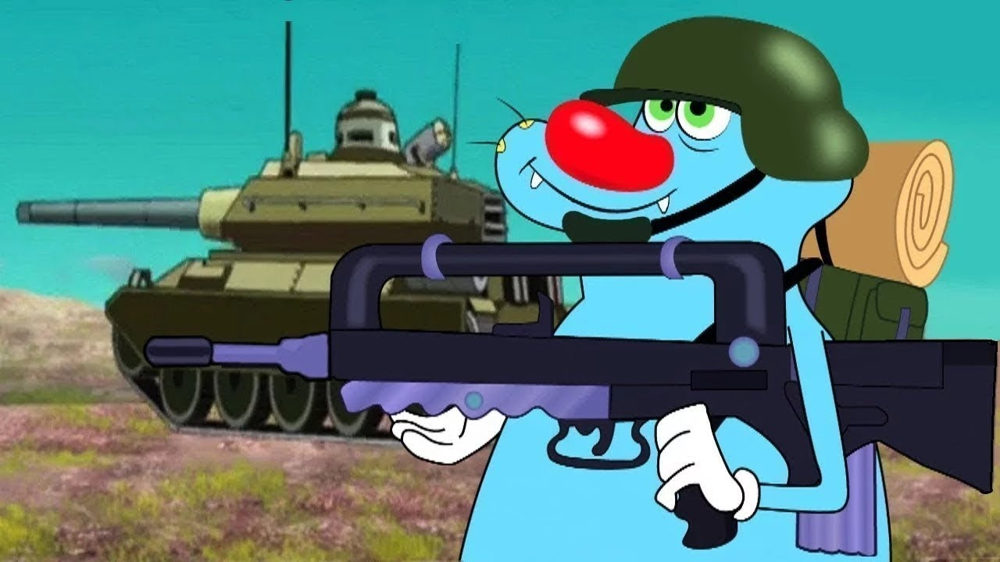
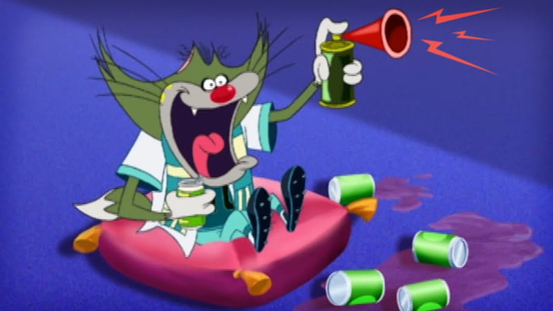
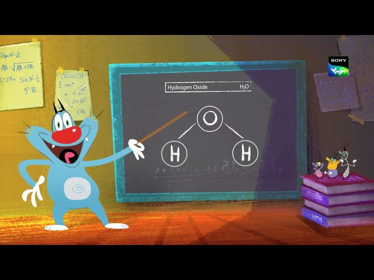

Codice
knitr::include_graphics(path = "img/sorridenti.jpg")
knitr::include_graphics(path = "img/sorridenti.jpg")
Benvenuti alla presentazione su come eliminare gli scarafaggi che infestano le nostre case! Nel corso di questa sessione, esploreremo un piano strategico basato sui dati raccolti nel dataset “InsectSprays” in R, con un focus particolare sui maledetti scarafaggi capitalisti che hanno avuto l’ardire di realizzare uno show televisivo, “Maledetti Scarafaggi”, che genera guadagni a danno della popolazione generale.
Gli scarafaggi sono una piaga per molte case e possono causare fastidi e preoccupazioni per la salute. Attraverso l’analisi dei dati e l’elaborazione di strategie efficaci, esploreremo modi innovativi per sconfiggere questa infestazione una volta per tutte.
knitr::include_graphics(path = "img/sad.jpg")
“Non c’è giorno in cui questi maledetti scarafaggi non mi facciano impazzire! Ogni angolo della casa è invaso da loro, è come se avessero un piano ben orchestrato per tormentarmi senza sosta. È ora di porre fine a questa invasione una volta per tutte, prima che prendano il controllo completo della mia casa e della mia sanità mentale! Mi chiedo ogni giorno:
- cosa potrei fare?
- chi mi può aiutare?”
Il dataset “InsectSprays” contiene dati sperimentali che riguardano l’efficacia di vari insetticidi contro scarafaggi. Permette, quindi, di confrontare l’efficacia dei diversi trattamenti e di identificare l’insetticida più adatto per la specifica situazione. Nello specifico sono stati analizzati diversi insetticidi spray:
knitr::include_graphics(path = "img/spray1.jpeg")
knitr::include_graphics(path = "img/spray2.jpeg")knitr::include_graphics(path = "img/spray3.png")
knitr::include_graphics(path = "img/spray4.jpg")
knitr::include_graphics(path = "img/spray5.jpg")
knitr::include_graphics(path = "img/spray6.jpg")
Cerca Figura 1 oppure in Tabella 1
knitr::include_graphics(path = "img/math.jpg")
Un punto Z: \[z_1= \frac{x_1 - \bar{X}}{sd} = \frac{10 - 9.5}{7.2032856} = 0.0694128\]
kableExtra::kable(data[1:6, 1:2])Tabella 1: Una tabella di esempio
| count | spray |
|---|---|
| 10 | A |
| 7 | A |
| 20 | A |
| 14 | A |
| 14 | A |
| 12 | A |
?(caption)